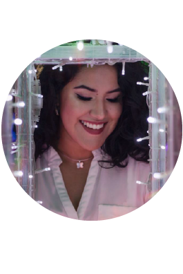

<section data-name="profile" class="page">
	
    <nav class="navbar">
      <div class="navbar-inner">
          <div class="left"><a href="#" class="link back"><i class="material-icons">arrow_back_ios</i></a></div>
          <div class="title">Profile</div>
      </div>
    </nav>
    
    <div class="page-content">
		
		<div class="block">
 
 		
 		
 	<div class="row">
 			<div class="title img-center">
 				Chef: Pilar Ramos<br>
				<div class="material-icons">stars stars stars stars stars</div> 
			</div>
	</div>
			<div class="row">
 			<div class="description img-center">
 				Pilar es una cocinera junior con afición por los dulces. Ella decició crear una app para vender sus productos y promocionarse en el mundo de los postres.
			</div>
	</div>
		
			
			<div class="row">
			<a href="/perfil/" class="link button button-fill btn-rosa">Contactar</a>
			<a href="#" class="link button btn-gris">Más Información</a>
		</div>
		
	</div>
	
	
</section>
